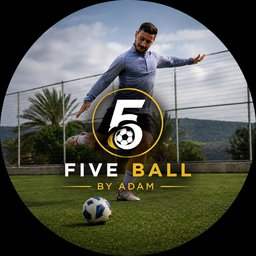

FIVE BALLBY ADAM
דף צילום
אדם, זה כל מה שצריך כדי לצלם את הסרטונים הראשונים בטלפון. בלי צוות ובלי ציוד מיוחד.
מה מצלמים עכשיו
- 10 תרגילים ראשונים לספרייה, אחד מכל סדרה.
- 4 סרטונים קצרים לבדיקת הקפטן.
הכול ביחד: בערך שעה וחצי במגרש.
איך מצלמים
- טלפון לרוחב, במצלמה האחורית, על חצובה או נשען על משהו יציב. לא ביד.
- גובה המותניים, 5 עד 7 מטרים ממך. כל הגוף והכדור בתוך התמונה כל הזמן, עם מעט מקום מעל הראש ומתחת לרגליים.
- השמש מאחורי הטלפון, לא מאחוריך. הכי טוב בבוקר או לקראת ערב.
- שקט: בלי מוזיקה ברקע (זכויות יוצרים), ורחוק מכביש או ממגרש רועש. אם יש רוח, מדברים קרוב יותר לטלפון בפתיחה.
- בגדים בלי לוגו של ספונסר ובלי ילדים אחרים בתמונה, אלא אם ההורים שלהם אישרו בכתב.
- לפני שמתחילים: מנקים את העדשה, מצב טיסה, ובודקים שיש מקום פנוי בטלפון.
כךרוחב, כל הגוף והכדור
לא כךאורך, קרוב מדי, רגליים חתוכות
המבנה של כל סרטון
- פתיחה, 5 שניות. מול המצלמה: שם התרגיל ומה הוא משפר.
- לאט, עם הסבר. מבצעים בהילוך איטי ואומרים את 2 או 3 הדגשים החשובים.
- בקצב משחק. אותו תרגיל במהירות מלאה, 10 עד 15 שניות, בלי לדבר.
- הטעות הנפוצה. מראים איך זה נראה כשעושים לא נכון, ואיך מתקנים.
- סיום. "עכשיו תורך", וכמה זמן או כמה חזרות לתרגל.
אורך: 45 עד 90 שניות. עדיף שני טייקים קצרים מאחד ארוך. אין צורך לערוך, שולחים את הקובץ כמו שהוא.
10 התרגילים הראשונים
צולמו 0 מתוך 10. הסימון נשמר בטלפון הזה.
טוען את הרשימה…
4 סרטוני בדיקה לקפטן
הקפטן הוא הבינה המלאכותית שתיתן לילדים ציון על סרטון שהם מעלים. לפני שמבטיחים את זה להורים, צריך לבדוק שהציונים שלו הגיוניים. בשביל זה צריך ממך ארבעה סרטונים של אותו תרגיל: נגיעות סוליה במקום.
כאן מצלמים אחרת: כמו שילד היה מצלם. טלפון לאורך, מישהו מחזיק ביד, מהצד, 3 עד 4 מטרים, 20 שניות, בלי לדבר.
צולמו 0 מתוך 4.
ועוד דבר אחד
לפני שרואים מה הקפטן אמר, תכתוב איזה ציון מ-1 עד 10 אתה היית נותן לכל אחד מהארבעה. ככה נדע אם הוא שופט כמוך.
איך שולחים
- בוואטסאפ שולחים כמסמך ולא כסרטון רגיל, כדי שהאיכות לא תרד. אפשר גם קישור מ-Google Drive או iCloud.
- בשם הקובץ או בהודעה כותבים את המספר שמופיע ליד התרגיל ברשימה, או את האות של סרטון הבדיקה.
- לא צריך לחכות שהכול מוכן. אפשר לשלוח סרטון אחד ולקבל הערות לפני שמצלמים את השאר.